MENS salon 毛太郎（メンズサロン ケタロウ）Instagram広告 ／ 完成動画 シーン一覧
MENS salon 毛太郎様 Instagram広告アニメーション・完成版（v6・約66秒）のシーン一覧です。内容のご確認をお願いいたします。
ご確認のお願い
各シーンの画像・テロップ（字幕）・ナレーション／セリフを並べています。修正のご希望があれば、シーン番号（例：S06）でお知らせください。
S06のテロップを変えてほしいシーン番号（例：S06）でお知らせいただくとスムーズです。

画像をクリックするとYouTubeで再生されます（約66秒）。
完成動画（全16シーン）
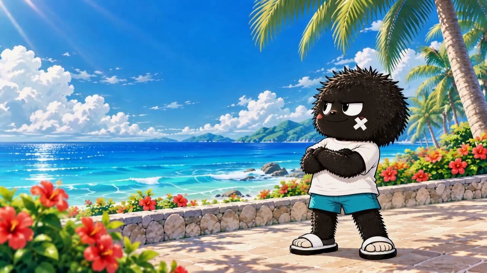
オープニング（ビーチの毛太郎）
南国のビーチに毛むくじゃらの毛太郎が一人で登場し、気合を入れるポーズ。
毛太郎のセリフ
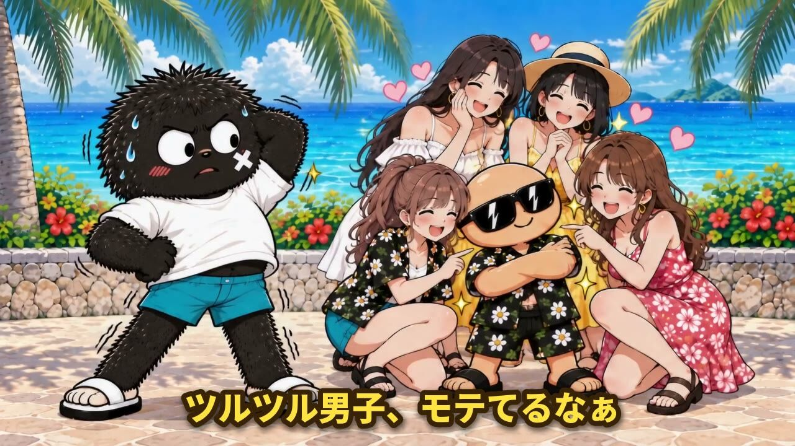
モテているツルツル男子を発見
ツルツル肌の男性が女性グループに囲まれてモテている様子を、毛太郎が少し離れた所から見ている。
毛太郎のセリフ
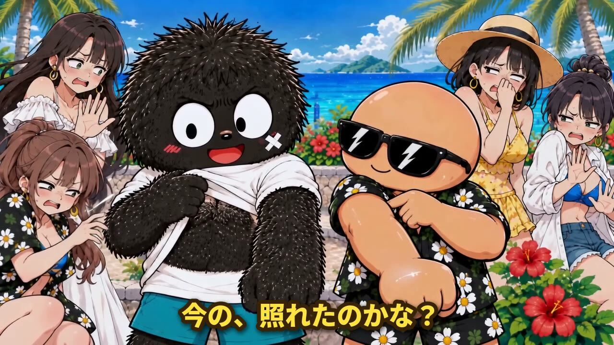
照れるツルツル男子
ツルツル男子が女性たちの反応に照れる仕草を見せる。
毛太郎のセリフ
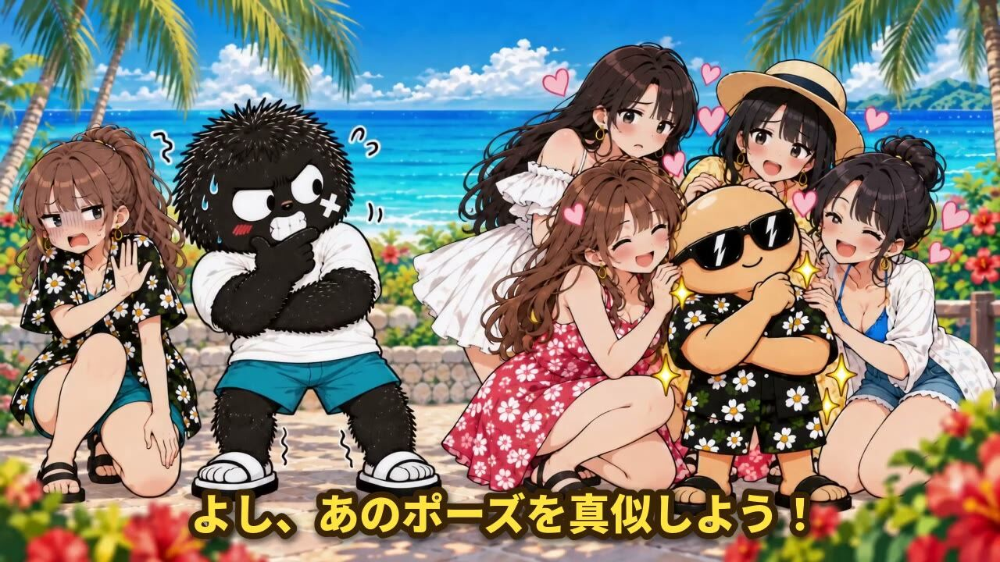
ポーズを真似する毛太郎
毛太郎がツルツル男子のポーズを真似しようとする（効果音：間抜け3）。
毛太郎のセリフ
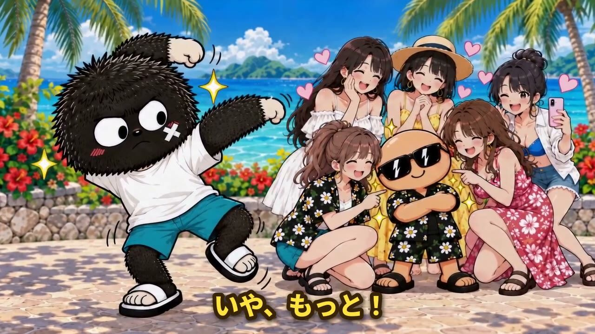
もっと真似しようとする毛太郎
毛太郎がさらにポーズを強めようとする。※v6でこのシーンのみカットを差し替え済みです。
毛太郎のセリフ
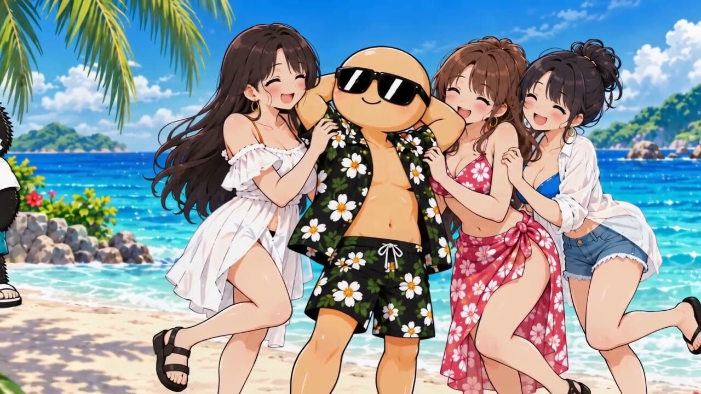
違和感に気づく
女性たちが立ち去っていく様子に毛太郎が戸惑う（効果音：チーン1）。
毛太郎のセリフ
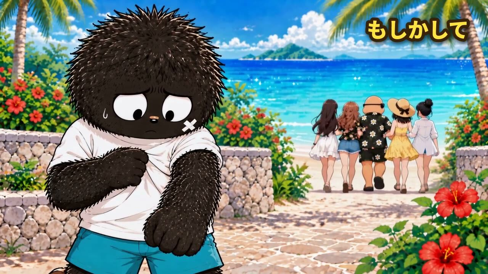
原因に気づく毛太郎
一人残された毛太郎が、女性たちが去った理由に気づき始める（効果音：ピピッ）。
毛太郎のセリフ
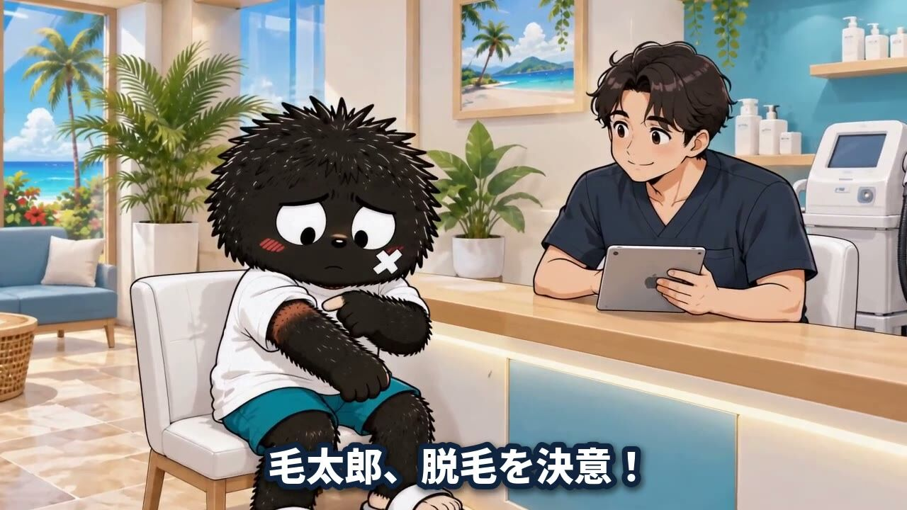
脱毛サロンでのカウンセリング
毛太郎がスタッフと対面するカウンセリングシーン（効果音：シーン切り替え2）。
ナレーション
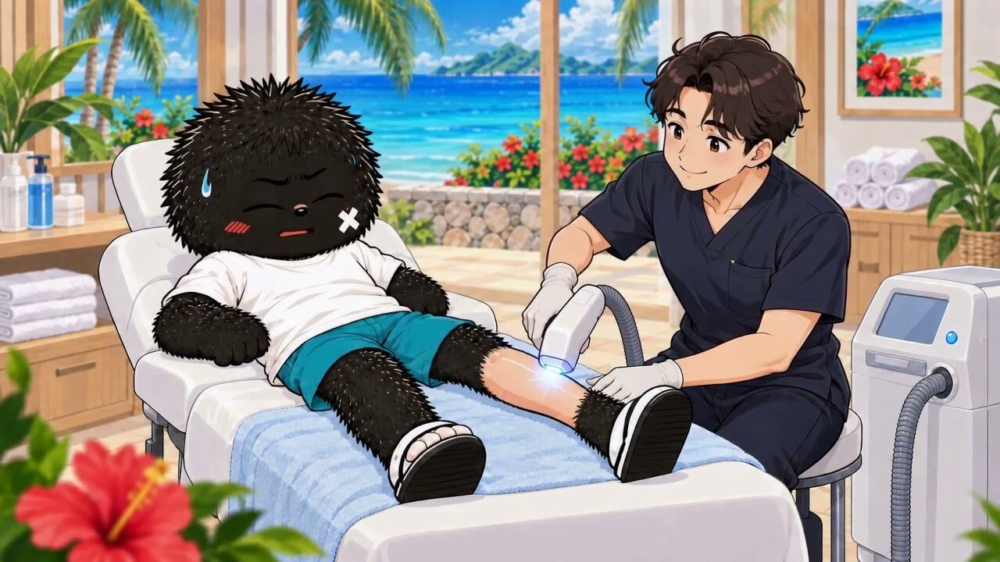
脚の施術開始
施術ベッドで脚の脱毛施術が始まる。
毛太郎のセリフ
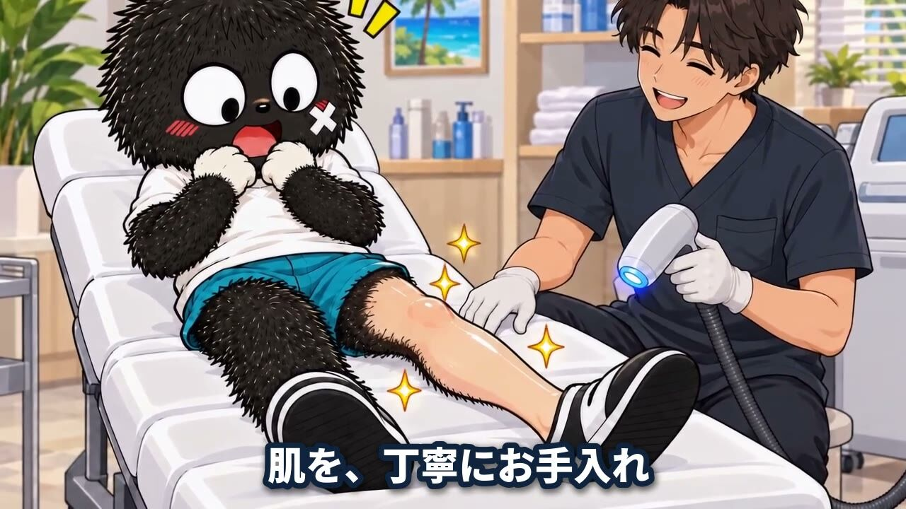
丁寧な施術カット
施術の様子をアップで見せるカット。
ナレーション
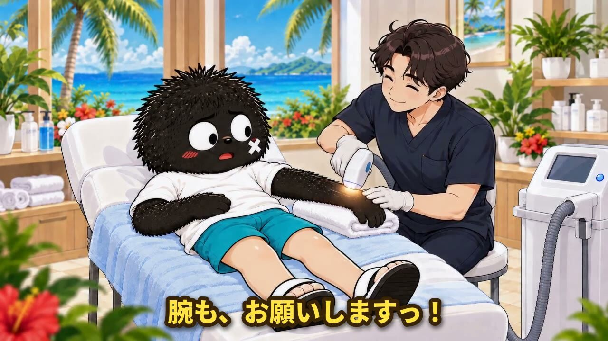
腕の施術に移る
毛太郎が腕の施術もお願いする。
毛太郎のセリフ
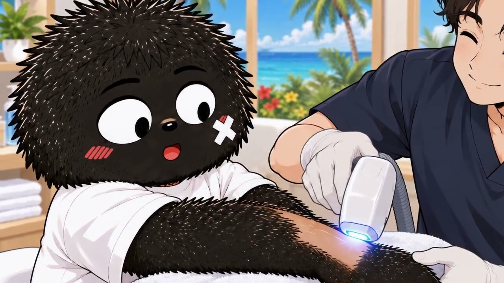
施術継続カット
腕の施術が続く様子のつなぎカット。
セリフ・ナレーションなし
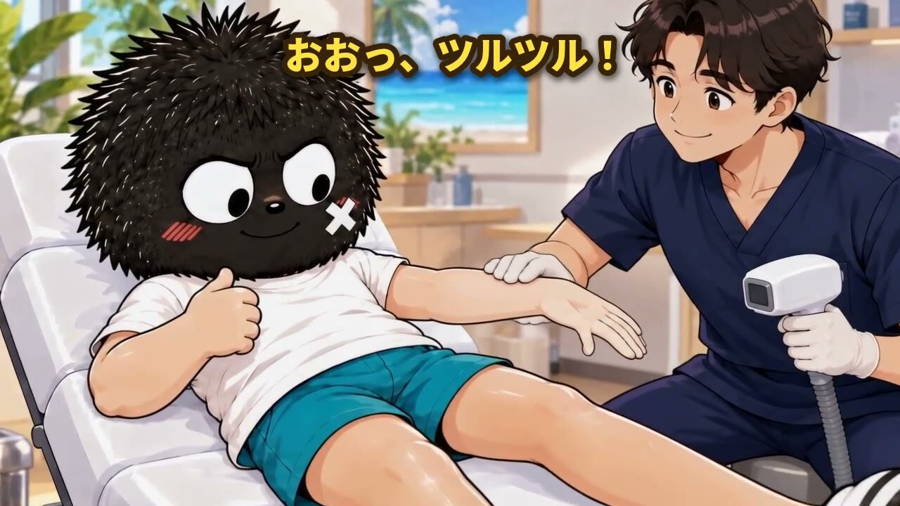
ツルツルになった腕に感動
施術後、ツルツルになった腕を見て毛太郎が喜ぶ（効果音：きらーん1）。
毛太郎のセリフ
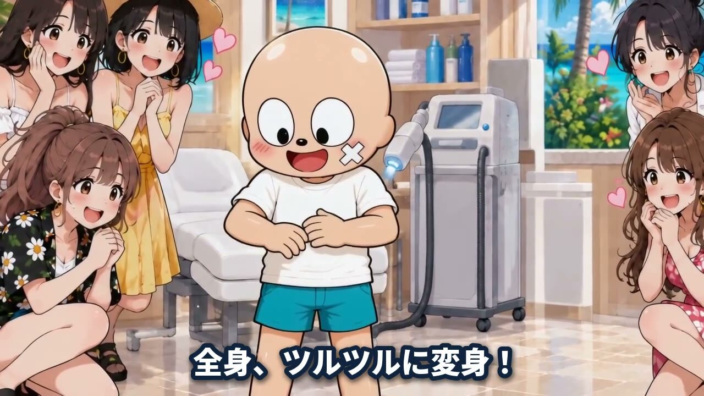
全身ツルツルに変身
全身がツルツルになった毛太郎を、女性たちが遠くから見つめる。
ナレーション
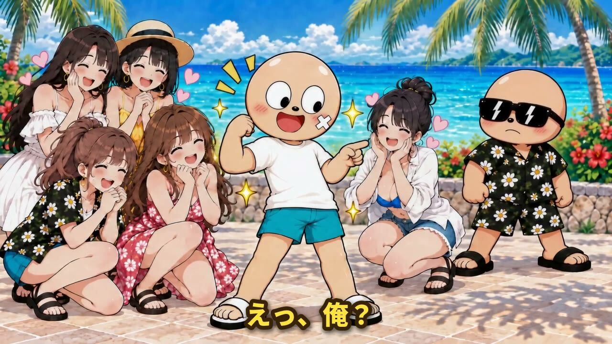
女性たちに囲まれる毛太郎
ツルツルになった毛太郎が女性たちに囲まれ、驚きながらも喜ぶ（効果音：キラッ1）。
毛太郎のセリフ
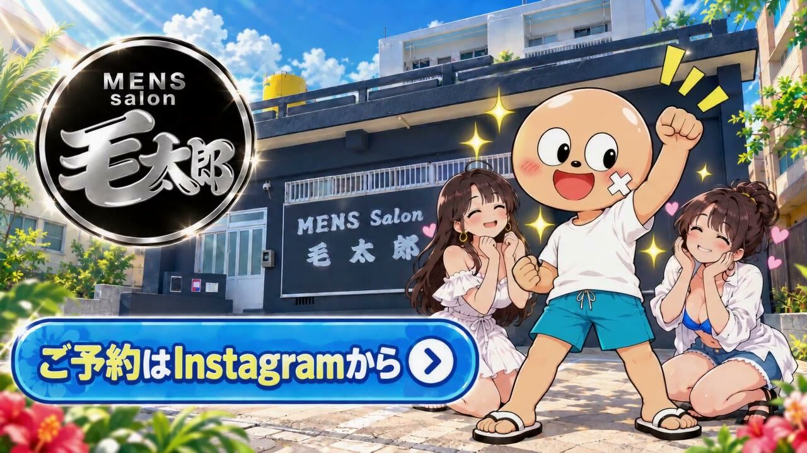
エンドカード（CTA）
ロゴバッジ「MENS salon 毛太郎」・店舗イメージイラスト・ツルツルになった毛太郎キャラと女性たち・予約導線ボタンを表示。
ナレーション
※このシーンは翁長様よりご提供いただいたCTA動画をそのまま使用しています（速度変更・トリミング・加工なし）。画面上に電話番号の表示はありません。